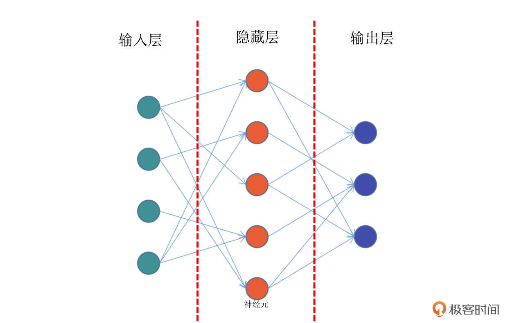
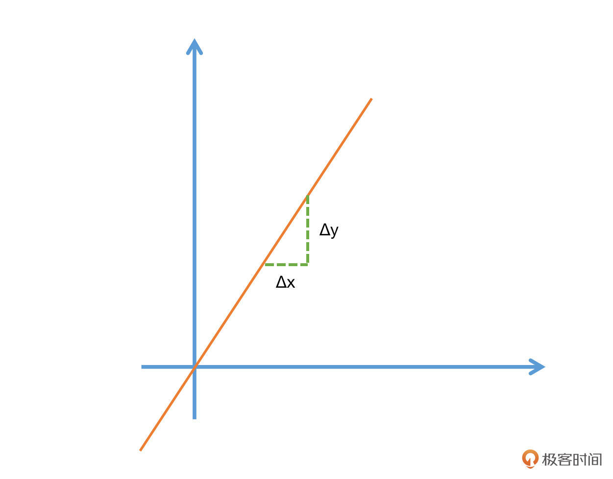

- 00 开篇词 如何高效入门PyTorch？.md.html
- 01 PyTorch：网红中的顶流明星.md.html
- 02 NumPy（上）：核心数据结构详解.md.html
- 03 NumPy（下）：深度学习中的常用操作.md.html
- 04 Tensor：PyTorch中最基础的计算单元.md.html
- 05 Tensor变形记：快速掌握Tensor切分、变形等方法.md.html
- 06 Torchvision（上）：数据读取，训练开始的第一步.md.html
- 07 Torchvision（中）：数据增强，让数据更加多样性.md.html
- 08 Torchvision（下）：其他有趣的功能.md.html
- 09 卷积（上）：如何用卷积为计算机“开天眼”？.md.html
- 10 卷积（下）：如何用卷积为计算机“开天眼”？.md.html
- 11 损失函数：如何帮助模型学会“自省”？.md.html
- 12 计算梯度：网络的前向与反向传播.md.html
- 13 优化方法：更新模型参数的方法.md.html
- 14 构建网络：一站式实现模型搭建与训练.md.html
- 15 可视化工具：如何实现训练的可视化监控？.md.html
- 16 分布式训练：如何加速你的模型训练？.md.html
- 17 图像分类（上）：图像分类原理与图像分类模型.md.html
- 18 图像分类（下）：如何构建一个图像分类模型_.md.html
- 19 图像分割（上）：详解图像分割原理与图像分割模型.md.html
- 20 图像分割（下）：如何构建一个图像分割模型？.md.html
- 21 NLP基础（上）：详解自然语言处理原理与常用算法.md.html
- 22 NLP基础（下）：详解语言模型与注意力机制.md.html
- 23 情感分析：如何使用LSTM进行情感分析？.md.html
- 24 文本分类：如何使用BERT构建文本分类模型？.md.html
- 25 摘要：如何快速实现自动文摘生成？.md.html
- 加餐 机器学习其实就那么几件事.md.html
- 用户故事 Tango：师傅领进门，修行在个人.md.html
- 答疑篇 思考题答案集锦.md.html
- 结束语 人生充满选择，选择与努力同样重要.md.html
- 捐赠
12 计算梯度：网络的前向与反向传播
你好，我是方远。
在上节课，我们一同学习了损失函数的概念以及一些常用的损失函数。你还记得我们当时说的么：模型有了损失函数，才能够进行学习。那么问题来了，模型是如何通过损失函数进行学习的呢？
在接下来的两节课中，我们将会学习前馈网络、导数与链式法则、反向传播、优化方法等内容，掌握了这些内容，我们就可以将模型学习的过程串起来作为一个整体，彻底搞清楚怎样通过损失函数训练模型。
下面我们先来看看最简单的前馈网络。
前馈网络
前馈网络，也称为前馈神经网络。顾名思义，是一种“往前走”的神经网络。它是最简单的神经网络，其典型特征是一个单向的多层结构。简化的结构如下图：

结合上面的示意图，我带你具体看看前馈网络的结构。这个图中，你会看到最左侧的绿色的一个个神经元，它们相当于第0层，一般适用于接收输入数据的层，所以我们把它们叫做输入层。
比如我们要训练一个y=f(x)函数的神经网络，x作为一个向量，就需要通过这个绿色的输入层进入模型。那么在这个网络中，输入层有5个神经元，这意味着它可以接收一个5维长度的向量。
结合图解，我们继续往下看，网络的中间有一层红色的神经元，它们相当于模型的“内部”，一般来说对外不可见，或者使用者并不关心的非结果部分，我们称之为隐藏层。在实际的网络模型中，隐藏层会有非常多的层数，它们是网络最为关键的内部核心，也是模型能够学习知识的关键部分。
在图的右侧，蓝色的神经元是网络的最后一层。模型内部计算完成之后，就需要通过这一层输出到外部，所以也叫做输出层。
需要说明的是，神经元之间的连线，表示神经元之间连接的权重，通过权重就会知道网络中每个节点的重要程度。
那么现在我们回头再来看看前馈神经网络这个名字，是不是就很好理解了。在前馈网络中，数据从输入层进入到隐藏层的第一层，然后传播到第二层，第三层……一直到最后通过输出层输出。数据的传播是单向的，无法后退，只能前行。
导数、梯度与链式法则
既然有了前向的数据传播，自然也会有反向的数据传播过程。
说到反向传播，我们常常还会把梯度下降、链式法则这些词挂在嘴边。不过初次接触的话，这些生词你直接搜定义，常常还是一头雾水。其实并不是这些概念很复杂，而是你的学习路径有问题。
所以，接下来我会带你重温高数学过的导数、偏导数，搞懂这些前置知识，你就能对反向传播所需的知识做一个回顾，也能更好地理解反向传播的原理。
导数
导数，也叫做导函数值。
还记得高中数学我们曾学习过的斜率么？例如一个函数\(F=2x^2\)，它的导数F’=4x。其实斜率就是一种特殊情况下的导数。
更普遍的情况也很容易推导，我们以F=3x为例，在x=3的时候，函数值为3x=3*3=9。现在我们给x一个非常小的增量Δx，那么就有了F(x+Δx)=3(x+Δx)，也就是说函数值也有了一个非常小的增量，我们记为Δy。
当函数值增量Δy与变量x的增量Δx的比值，在Δx趋近于0时，如果极限a存在，我们就称a为函数F(x)在x处的导数。

需要注意的是，Δx一定要趋近于0，而且极限a是要存在的。不过在这节课里，极限的定义以及如何去判断极限并非是核心内容，感兴趣的小伙伴有空可以自己查阅相关的内容。
对照下面的公式，你会对导数的理解更加清晰，高中数学的斜率其实就是一种特殊的导数。导数我们一般采用如下的方式做描述：
\[- f^{\\prime}\\left(x\_{0}\\right)=\\lim \_{\\Delta x \\rightarrow 0} \\frac{\\Delta y}{\\Delta x}=\\lim \_{\\Delta x \\rightarrow 0} \\frac{f\\left(x\_{0}+\\Delta x\\right)-f\\left(x\_{0}\\right)}{\\Delta x}- \]
这里面lim就是极限的意思。另外，函数y关于x的导数也可以记为\(\\frac{\\partial y}{\\partial x}\)。
偏导数
细心的小伙伴看到这里可能就会有疑问了，有的函数不止一个变量呀，比如z=3x+2y，这个函数中就同时存在了x和y两种变量，那该怎么求它们的导数呢？
别着急，这时我们就要让偏导数登场了。偏导数其实就是保持一个变量变化，而所有其他变量恒定不变的求导过程。
还是刚才的原理，假设有个函数z=f(x,y)，当我们要求x方向的导数的时候，就可以给x一个非常小的增量Δx，同时保持y不变。反之，如果要求y方向的导数，则需要给y一个非常小的增量Δy，而x保持不变。于是就能得出如下的偏导数描述公式：
\[- \\frac{\\partial}{\\partial x\_{j}} f\\left(x\_{0}, x\_{1}, \\ldots, x\_{n}\\right)=\\lim \_{\\Delta x \\rightarrow 0} \\frac{\\Delta y}{\\Delta x}=\\lim \_{\\Delta x \\rightarrow 0} \\frac{f\\left(x\_{0}, \\ldots, x\_{j}+\\Delta x, \\ldots, x\_{n}\\right)-f\\left(x\_{0}, \\ldots, x\_{j}, \\ldots, x\_{n}\\right)}{\\Delta x}- \]
上面的公式，看上去很复杂，其实仔细看，你就会发现只有\(x\_{j}\)这个变量有一个小小的Δx，也就是说在x的某一个维度(j)增加了一个小的增量。
我们举个具体的例子来加深理解。比如对于函数\(z=x^{2}+y^{2}\)，\(\\frac{\\partial z}{\\partial x}=2 x\)表示函数z在x上的导数，\(\\frac{\\partial z}{\\partial y}=2 y\)表示函数z在y上的导数。
梯度
当我们了解了导数和偏导数的概念之后，那么梯度的概念就会非常容易理解了。函数所有偏导数构成的向量就叫做梯度。是不是非常简单呢？
我们一般使用\(\\nabla f\)来表述函数的梯度。它的描述公式为：
\[- \\nabla f(x)=\\left\[\\frac{\\partial f}{\\partial x\_{1}}, \\frac{\\partial f}{\\partial x\_{2}}, \\ldots, \\frac{\\partial f}{\\partial x\_{i}}\\right\]- \]
关于梯度，后面这个结论你一定要牢记：梯度向量的方向即为函数值增长最快的方向。
这是一个非常重要的结论，它贯穿了整个深度学习的全过程。模型要学习知识，就要用最快最好的方式来完成，其实就是需要借助梯度来进行。不过，这个结论涉及的证明过程以及数学知识点非常多，这里你只需要记住结论就够了。
链式法则
深度学习的整个学习过程，其实就是一个更新网络节点之前权重的过程。这个权重就是刚才咱们在前馈网络中示意图中看到的节点之间的连线，权重我们一般使用w来进行表示。
回忆一下上节课我们提到的损失函数，模型就是通过不断地减小损失函数值的方式来进行学习的。让损失函数最小化，通常就要采用梯度下降的方式，即：每一次给模型的权重进行更新的时候，都要按照梯度的反方向进行。
为什么呢？因为梯度向量的方向即为函数值增长最快的方向，反方向则是减小最快的方向。
上面这个自然段的内容非常非常核心，为了确保你学会，我们换个方式再说一次：模型通过梯度下降的方式，在梯度方向的反方向上不断减小损失函数值，从而进行学习。
好，我们具体来看一个公式加深理解，假设我们把损失函数表示为：- $\(- H\\left(W\_{11}, W\_{12}, \\cdots, W\_{i j}, \\cdots, W\_{m n}\\right)- \)$
其中，Wij表示第i层的第j个节点对应的权重值。则其梯度向量▽H为：
\[- \\left\[\\frac{\\partial H}{\\partial w\_{11}}, \\quad \\frac{\\partial H}{\\partial w\_{12}}, \\ldots, \\quad \\frac{\\partial H}{\\partial w\_{i j}}, \\ldots, \\quad \\frac{\\partial H}{\\partial w\_{m n}}\\right\]- \]
看到这里，你发现了什么问题？对，感觉这个公式好复杂啊，令人头秃。就比如第一项，w11跟H的关系我哪知道呀，中间隔了那么多层。
这时候，就需要链式法则隆重登场了：“两个函数组合起来的复合函数，导数等于里面函数代入外函数值的导数，乘以里面函数之导数。”这个法则包括了两种形式：
\[- \\text { 1. } \\frac{\\mathrm{d} y}{\\mathrm{~d} x}=f^{\\prime}(g(x)) g^{\\prime}(x)- \]
- $\(- \\text { 2. } \\frac{\\mathrm{d} y}{\\mathrm{~d} x}=\\frac{\\mathrm{d} y}{\\mathrm{~d} u} \\cdot \\frac{\\mathrm{d} u}{\\mathrm{~d} x}- \)$
可能这时候的你仍旧还很懵，不过没关系，我们通过一个更具体的例子再解释一下，你就知道该如何去计算了。
假设我们手中有函数\(f(x)=\\cos \\left(x^{2}-1\\right)\)。我们可以把函数分解为：
\[- \\text { 1. } f(x)=\\cos (x)- \]
\[- \\text { 2. } g(x)=x^{2}-1- \]
\(\\mathrm{g}(\\mathrm{x})\)的导数\(g^{\\prime}(x)=2 x\)，\(\\mathrm{f}(\\mathrm{x})\)的导数\(f^{\\prime}(x)=-\\sin (x)\)，则\(f^{\\prime}(x)=f^{\\prime}(g(x)) g^{\\prime}(x)=-\\sin \\left(x^{\\wedge} 2-1\\right) 2 x\)，相当于各自求导后再相乘。
说到这，你是不是有点感觉了？这个部分需要你结合公式和我提供的例子仔细看一看，相信你一定可以搞定它。
反向传播
了解了前面的导数、偏导数、梯度、链式法则，反向传播必备的前置知识我们就搞定了。接下来正式进入反向传播的学习，你会发现前面咱们花的这些功夫都没有白费。
反向传播算法（Backpropagation）是目前训练神经网络最常用且最有效的算法。模型就是通过反向传播的方式来不断更新自身的参数，从而实现了“学习”知识的过程。
反向传播的主要原理是：
- 前向传播：数据从输入层经过隐藏层最后输出，其过程和之前讲过的前馈网络基本一致。
- 计算误差并传播：计算模型输出结果和真实结果之间的误差，并将这种误差通过某种方式反向传播，即从输出层向隐藏层传递并最后到达输入层。
- 迭代：在反向传播的过程中，根据误差不断地调整模型的参数值，并不断地迭代前面两个步骤，直到达到模型结束训练的条件。
其中最重要的环节有两个：一是通过某种方式反向传播；二是根据误差不断地调整模型的参数值。
这两个环节，我们统称为优化方法，一般而言，多采用梯度下降的方法。这里就要使用到导数、梯度和链式法则相关的知识点，梯度下降我们将在下节课详细展开。
反向传播的数学推导以及证明过程是非常复杂的，在实际的研发过程中反向传播的过程已经被PyTorch、TensorFlow等深度学习框架进行了完善的封装，所以我们不需要手动去写这个过程。不过作为深度学习的研发人员，你还是需要深入了解这个过程的运转方式，这样才能搞清楚深度学习中模型具体是如何学习的。
小结
这节课我们一块学习了前馈网络这种最简单的神经网络。
虽然前馈网络很简单，但是它的思想贯穿了整个深度学习的过程，是非常重要的概念。同时我们又学习了导数、梯度和链式法则，这几个内容是模型做反向传播从而学习知识的最重要知识点，也是深度学习的内在核心内容，你一定要牢牢掌握。
最后，我们初步了解了反向传播的大致过程和概念，这为我们后面正式学习如何计算反向传播奠定了基础。
今天的内容里，我尽可能将相关数学知识点进行了简化，保留了最核心的内容。但实际上在深度学习的研究中，涉及的数学知识点非常多，如果感兴趣，你可以在课后查阅更多的相关资料，不断进步。
下节课，我会带你学习优化函数，学会了优化函数之后，我们就可以正式开始计算反向传播的过程了。
每课一练
深度学习都是基于反向传播的么？
欢迎你在留言区跟我交流互动，也推荐你把今天的内容分享给更多同事、朋友。
我是方远，我们下节课见！
© 2019 - 2023 Liangliang Lee. Powered by gin and hexo-theme-book.